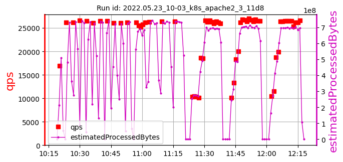
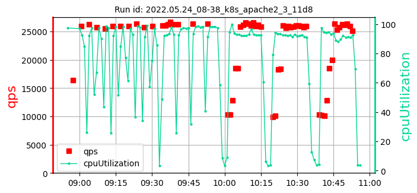

k8s_apache2_3_ samples: 9
date: 2022-06-13 11:36:06.376682
| | |
max:
533
min:
248
mean:
329
|
max:
26654
min:
25532
mean:
26141
|
max:
99.15
min:
96.32
mean:
97.93
|
max:
69
min:
20
mean:
44
|
| 1: 2022.03.26_20-03_k8s_apache2_3_0c47 | cpu=70 pods=3 treads=70 sc_min=14 warmup=130 | |
Dura-tion s | qps | CPU % | Err |
| | | [533, 422, 266]
407 | [26370, 26654, 26644]
26556 | [98.22, 97.86, 98.39]
98.15 | 30 |
| 2: 2022.05.23_07-21_k8s_apache2_3_11d8 | cpu=70 pods=3 treads=70 sc_min=14 warmup=130 | |
Dura-tion s | qps | CPU % | Err |
|  | | [337, 292, 276]
302 | [26508, 26223, 26386]
26372 | [98.59, 99.0, 98.62]
98.74 | 52 |
| 3: 2022.05.23_10-03_k8s_apache2_3_11d8 | cpu=70 pods=3 treads=70 sc_min=14 warmup=130 | |
Dura-tion s | qps | CPU % | Err |
|  | |  | [392, 298, 248]
313 | [26244, 26356, 26342]
26314 | [98.18, 98.49, 98.49]
98.39 | 51 |
| 4: 2022.05.23_20-21_k8s_apache2_3_11d8 | cpu=70 pods=3 treads=70 sc_min=14 warmup=130 | |
Dura-tion s | qps | CPU % | Err |
| |  | [306, 323, 287]
305 | [25575, 25547, 26078]
25733 | [99.15, 99.06, 98.86]
99.02 | 47 |
| 5: 2022.05.23_22-56_k8s_apache2_3_11d8 | cpu=70 pods=3 treads=70 sc_min=14 warmup=130 | |
Dura-tion s | qps | CPU % | Err |
| | | [341, 414]
378 | [25946, 26074, 26150]
26057 | [96.84, 97.12, 97.44]
97.13 | 69 |
| 6: 2022.05.24_08-38_k8s_apache2_3_11d8 | cpu=70 pods=3 treads=70 sc_min=14 warmup=130 | |
Dura-tion s | qps | CPU % | Err |
|  | | [353, 277, 421]
351 | [26291, 26351, 26335]
26326 | [97.15, 98.21, 98.25]
97.87 | 20 |
| 7: 2022.05.24_20-31_k8s_apache2_3_11d8 | cpu=70 pods=3 treads=70 sc_min=14 warmup=130 | |
Dura-tion s | qps | CPU % | Err |
| |  | [308, 335, 334]
326 | [25532, 25807, 25877]
25739 | [96.32, 97.31, 96.53]
96.72 | 58 |
| 8: 2022.05.26_08-26_k8s_apache2_3_11d8 | cpu=70 pods=3 treads=70 sc_min=14 warmup=130 | |
Dura-tion s | qps | CPU % | Err |
| | | [278, 294, 315]
295 | [26097, 26324, 26323]
26248 | [98.38, 98.12, 97.88]
98.13 | 35 |
| 9: 2022.05.26_20-52_k8s_apache2_3_11d8 | cpu=70 pods=3 treads=70 sc_min=14 warmup=130 | |
Dura-tion s | qps | CPU % | Err |
| | | [327, 305, 262]
298 | [26004, 25861, 25914]
25926 | [97.88, 96.57, 97.21]
97.22 | 31 |
k8s_apache2_3_ samples: 9
date: 2022-06-13 11:36:06.376682
| | |
max:
533
min:
248
mean:
329
|
max:
26654
min:
25532
mean:
26141
|
max:
99.15
min:
96.32
mean:
97.93
|
max:
69
min:
20
mean:
44
|